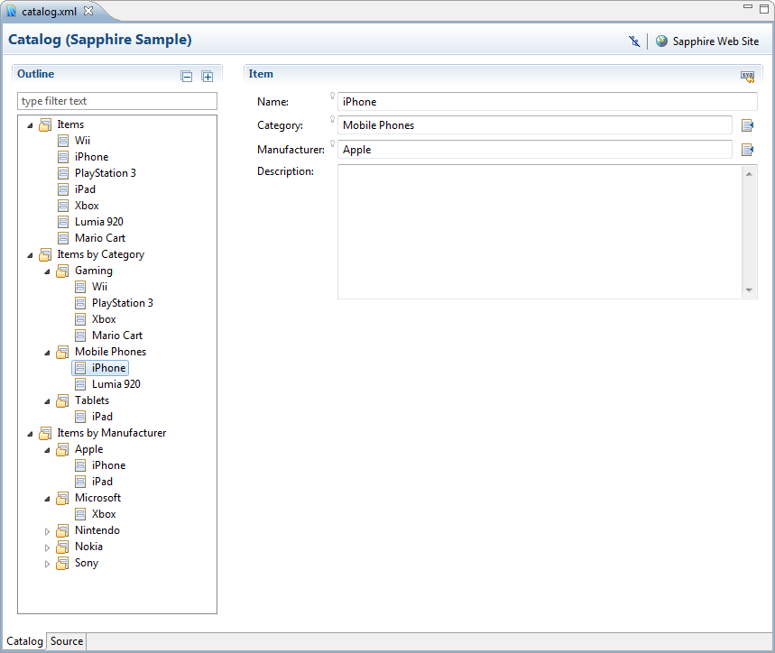

In the context of a property editor, specifying property name when using Enabled() function can be redundant, so a zero argument version of the function is now available, but only for the property editor context.
Example
<property-editor>
<property>FormLoginPage</property>
<visible-when>${ Enabled() }</visible-when>
</property-editor>Sapphire EL functions are registered by name and the same function can take an arbitrary number of operands. In certain cases, it is useful to direct different operand counts to different implementations. To that end, it is now possible to constraint which operand counts a particular function definition applies to. Absent the constraint, a function definition still applies to all operand counts.
Example
<extension xmlns="http://www.eclipse.org/sapphire/xmlns/extension">
<function>
<name>Enabled</name>
<operand-count>1</operand-count>
<operand-count>2</operand-count>
<impl>org.eclipse.sapphire.modeling.el.EnabledFunction</impl>
</function>
</extension><extension xmlns="http://www.eclipse.org/sapphire/xmlns/extension">
<function>
<name>Enabled</name>
<operand-count>0</operand-count>
<impl>org.eclipse.sapphire.ui.internal.PropertyEditorEnabledFunction</impl>
</function>
</extension>The new catalog editor sample demonstrates grouping of flat data.
